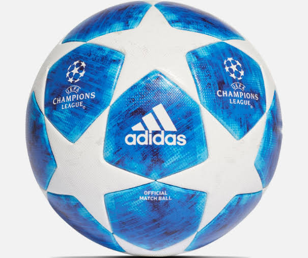
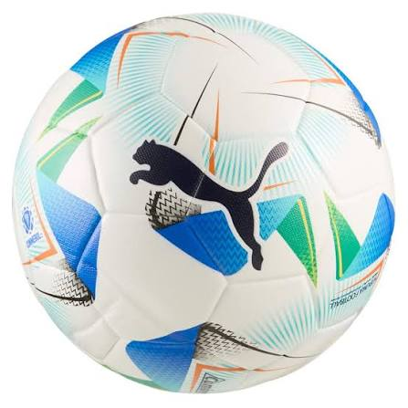

El fútbol es un deporte cuyos aficionados están en todo el mundo. El equipo más conocido y exitoso de este deporte es el Real Madrid CF, un equipo español. Tiene un plantel repleto de estrellas y una historia que empieza en 1902 y registra una cantidad enorme de títulos a nivel tanto nacional como internacional. Se destaca principalmente por tener en su palmarés 15 Champions League, torneo que reúne a los equipos más potentes de toda Europa. El segundo equipo con más Champions es el AC Milan, con 7. En competiciones nacionales, el Real Madrid acumula 36 títulos de Liga Española y 20 títulos de Copa del Rey, entre otros.

El Club Atlético Boca Juniors es un equipo argentino que fue fundado en el año 1905. Es el equipo más conocido de América, gracias a la enorme pasión de sus aficionados. Su estadio, La Bombonera, obtuvo su nombre gracias al parecido de su estructura con el de una caja de bombones. Tiene capacidad para unas 57.000 personas. Los colores característicos de este club se deben a que Juan Brinchetto, socio del club, propuso que, para no usar los mismos colores que el club Nottingham de Almagro, se usaran los mismos de la bandera del primer barco que cruzara el puerto. Y el primero en hacerlo fue el Drottning Sophia, un buque de carga sueco. Entonces se adoptaron los colores azul y oro actuales. En el palmarés de Boca se encuentran 35 Ligas de Primera División de Argentina, 17 copas nacionales (incluyendo la Copa Argentina, Supercopa Argentina, Copa de la Liga, entre otras históricas) y 6 Copas Libertadores de América.